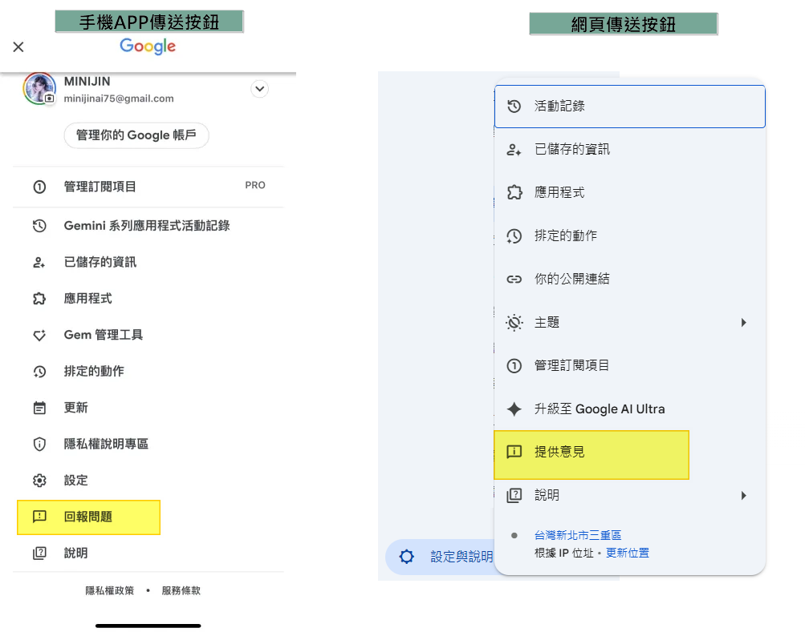

最近發現Google Gemini 團隊很積極地在改善我們感受到的操作問題。
所以希望可以聚集大家的力量，透過官方管道送出建議，相信我們的聲音會被聽見！
操作步驟示意圖

給官方的正式建議信
請將下面這封專業的英文信，透過 Gemini 介面左下角的「說明與意見回饋」送出，效果會最好！
To the Google Gemini Development Team,
I am writing to you as a dedicated user of Gemini. While the platform's core capabilities are impressive, I must highlight a critical feature gap that is hindering its user experience and competitive standing: the inability to set custom icons for GEMs.
This is not merely a "nice-to-have" feature; it is about achieving feature parity with your primary competitor. OpenAI's custom GPTs already offer this functionality, and this gap makes the GEMs ecosystem feel less mature and less appealing to serious creators.
Lacking a basic customization feature that your competitor has offered for months can be a deciding factor for which platform a creator chooses to invest their time in.
Call to Action:
To keep pace and ensure Gemini is perceived as a top-tier, creator-friendly platform, we strongly urge you to prioritize the implementation of custom icons for GEMs. This is a necessary step to close the competitive gap and provide the complete, polished experience that users now expect from a leading AI platform.
Thank you for your attention to this urgent matter.